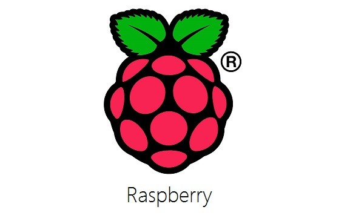
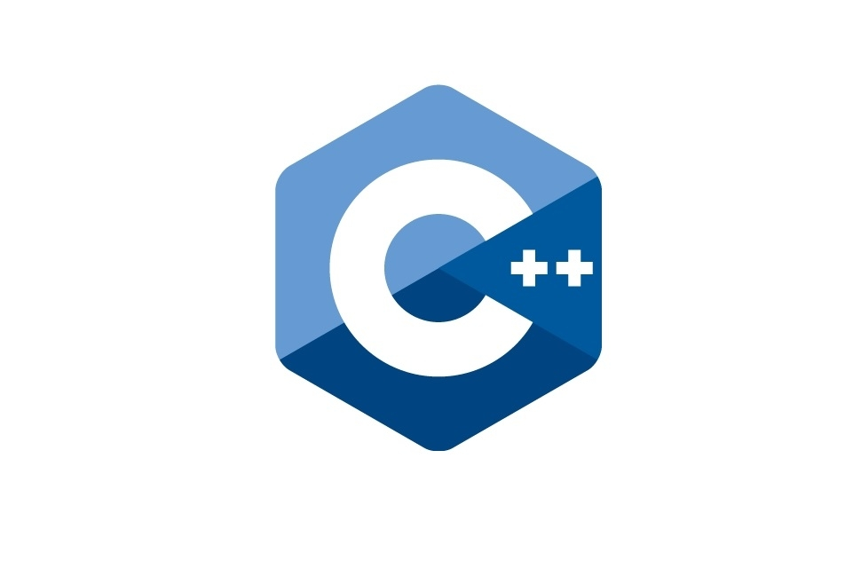
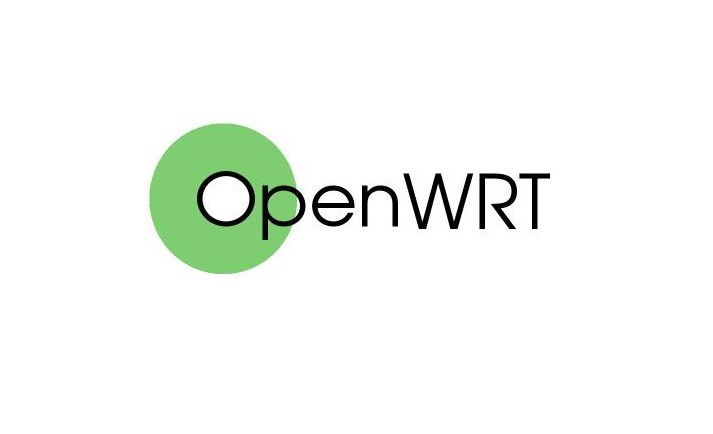

太难受了，Redmi K30i 5G弃子机，要是早知道这手机是弃子机就不买了。等到现在小米社区的内测也就只有一个稳定版内测，连开发版都没有，要知道开发版才是MIUI的灵魂啊！另外这稳定版内测一个包都没有，估计就是糊弄用户的吧？
2020/9/5更新:目前K30i的开发版已经上线，不过还没有包，希望这次不是糊弄用户的吧
推荐文章
最新文章
黑群晖体验DSM7.0预览版
最近群晖DSM7.0预览版终于出来了，看着这扁平化的UI...看着6.2.3那UI，忍不住想更新到DSM7.0。可是，当我好不容易，找到了DSM7…
2020-10-07 45 去围观

树莓派4使用AndroidTV 10系统
之前发布了这篇文章，可是，遗憾的是这个Android系统仅仅支持720P的分辨率以及不是AndroidTV系统，虽然我也想办法让他变得更像A…
2020-09-25 42 去围观
状态
2020-08-24
DSM6.2.3 Update2升级失败，提示文件可能损毁
在昨天安装了DSM6.2.3后，看到6.2.3有一个Update2的更新，于是我尝试更新，可是，当更新下载好开始安装时，更新程序却提示“无法…
2020-08-21 63 去围观
Proxmox VE(PVE)虚拟机安装黑群晖6.2.3
最近，入手了一台DELL R710，并且装上了Proxmox VE虚拟平台，看到群晖出了6.2.3，于是想在我的虚拟机上跑DSM6.2.3 1.开始 …
2020-08-20 65 去围观

记一次VSCode配置C++环境
由于VS实在太大了，Notepad++作者的变本加厉，我最终把主要编辑器换到了VSCode（刚开始一直说太大了不好用，现在真香了 由于…
2020-08-16 37 去围观
树莓派2B如何快速安装Android TV
最近，由于我内网NAS升级，性能已经完全足够跑原来跑在树莓派2B上的服务了，所以，我的树莓派就光荣退役了...不过，前几天上网…
2020-08-01 93 去围观
使用腾讯CDN出现无法访问、连接重置、ERR_HTTP2_PROTOCOL_ERROR等问题
看前提示，本文是篇口水文，如果想知道是怎么修复的请直接翻到最后，并且本文章的故障可能和您的故障不同，所以仅作参考 …
2020-07-22 121 去围观

全新Newifi3刷Breed和Openwrt
最近，为了组全千兆局域网，看在去年买的那台Newifi3是真的物美价廉，于是我又购入了一台Newifi3。虽然这个路由器厂商已经倒闭…
2020-07-18 108 去围观
记一次打印机无法打印，提示‘错误 - 正在打印’
昨天下午闲的没事干去我妈上班的地方玩，因为我对电脑感兴趣，所以就被叫去帮忙修一下打印机不能打印，打印队列提示 XXX.doc 错…
2020-07-16 91 去围观
加载更多